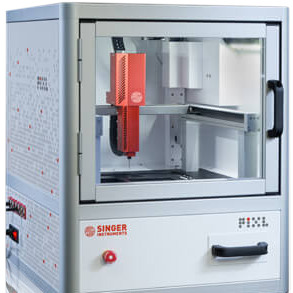
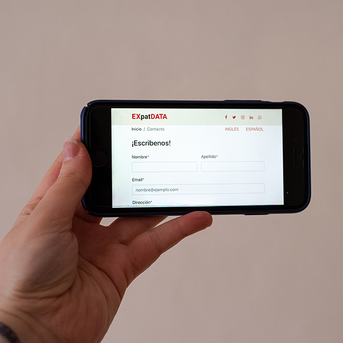
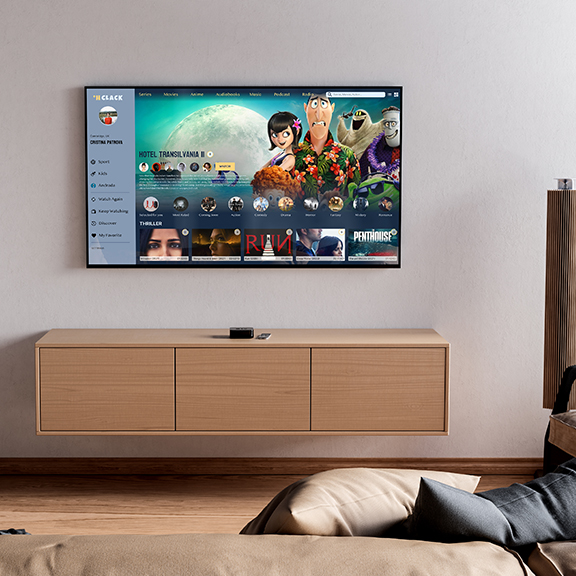
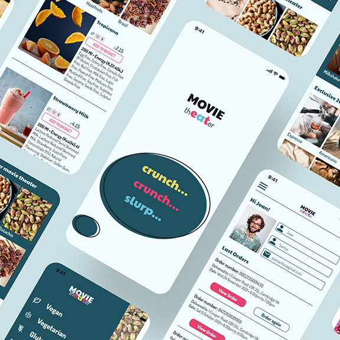
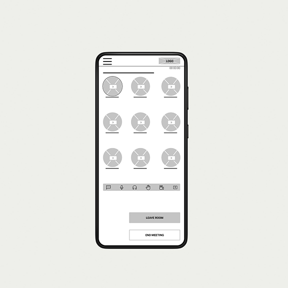

UX research, interaction design, and product prototyping
It's Christmas morning. You're a child who's been counting down for weeks, and you finally run downstairs to find a pile of gifts under the tree. You tear through the wrapping paper — toys, gadgets, everything you asked for. You try to turn one on. Nothing. You try another. Nothing. Santa brought everything except batteries, and every shop in town is closed. That rush of excitement followed by a wall of frustration? That's exactly what your users feel when they land on a beautiful product they can't quite use. They're willing, they're engaged — and then something small stops them from finishing what they came to do.
That's why user experience design matters. Not just making things look good, but reducing frustration and improving your product through usability and ergonomics — so every interaction gets people where they're trying to go.

Zone of inhibition • Designed a zone of inhibition analysis tool for lab scientists — surveys, questionnaires, and user testing sessions to improve data capture and usability. Intern of the Year 2022.
UX Research · Usability Testing · Prototyping

EXpatDATA • Designed an integration platform for expats navigating life in a new country — survey research, card sorting, and a fully coded responsive prototype.
UX Research · Responsive Design · HTML/CSS

°h Clack • Designed the UX for an audiovisual streaming platform — information architecture, interaction design, and high-fidelity prototype from concept to delivery.
UX Design · Interaction Design · Prototyping

Movie Theater • Designed a mobile app to order snacks from your seat, eliminating queue time and improving the cinema experience end to end.
UX Design · Mobile App · Usability Testing

UOC • Designed a social app to reduce isolation among online university students — card sorting, personas, and prototype tested with real students.
UX Research · Card Sorting · Prototyping